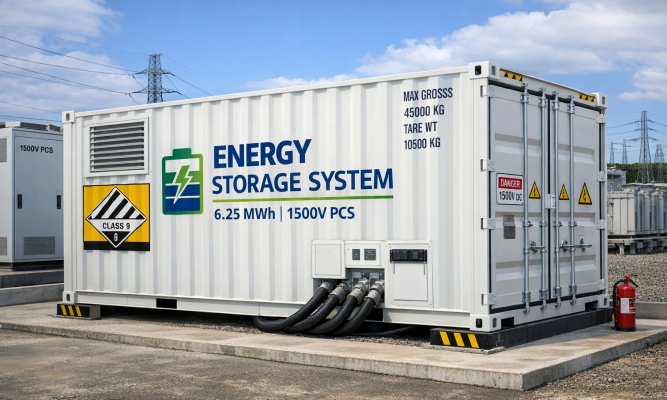
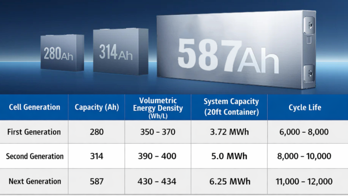
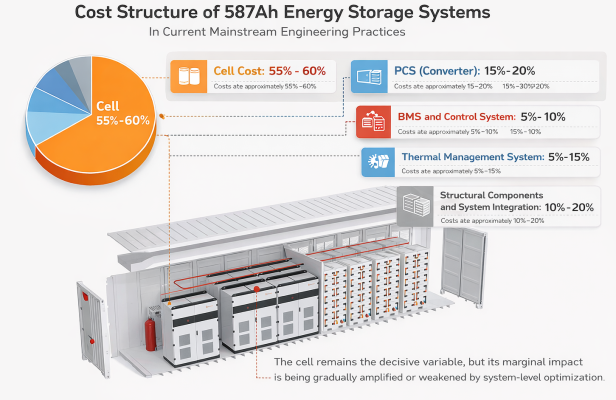
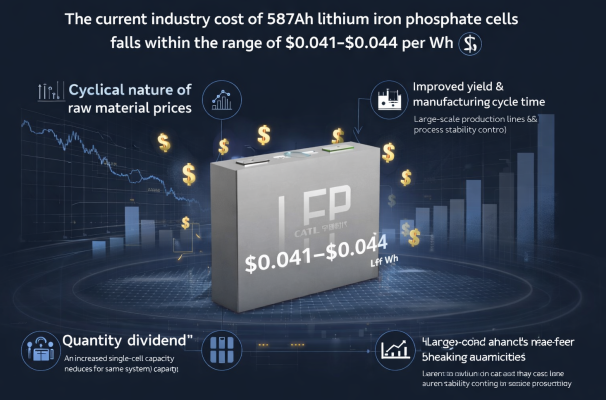
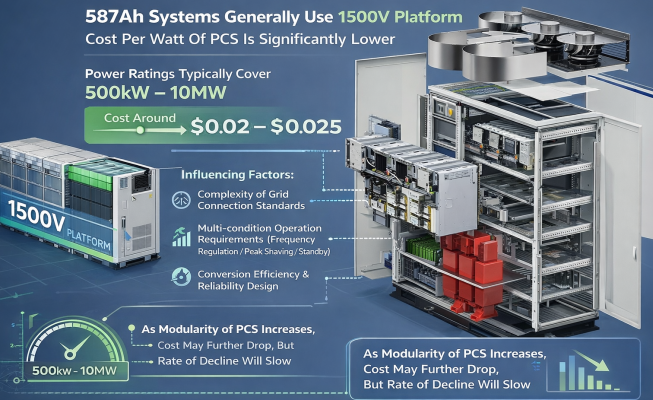
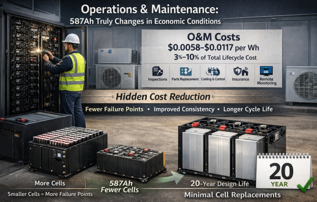
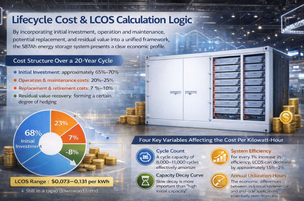
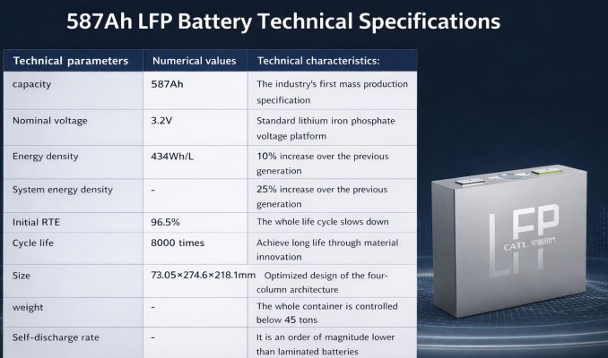

In the coming years, 314Ah cells, as the previous generation of mainstream specifications, will gradually fade from their core position in energy storage systems. Their role will be taken over by the next generation of high-capacity cells—represented by 587Ah and 684Ah. During recent visits to several system integrators, it was noted that systems using 587Ah cells have begun to be integrated and shipped. This article will analyze the current application status and industry trends of 587Ah cells from three dimensions: engineering logic, cost structure, and strategic roadmap.
Engineering Logic of 587Ah Cell
587Ah cells are typically used with a nominal voltage platform of 3.2V, corresponding to a single cell energy of approximately 1.88kWh. Strictly speaking, 587Ah does not originate from an existing capacity level in the current international or national standard system but rather is an engineering capacity selection first proposed and promoted by leading battery companies in the development of next-generation energy storage systems.
This specification was not simply a result of capacity scaling up, but rather based on a multi-objective optimization logic at the system level: under the premise of meeting high voltage platform requirements (such as 1500V PCS), standard 20-foot container structure, transportation and hoisting limitations, and long-term operational safety, the cell capacity, quantity configuration, and system energy density were repeatedly weighed and derived. Ultimately, 587Ah was considered to achieve a relative balance between system energy density, cost control, and engineering feasibility under current manufacturing processes and system integration conditions.

From a system design perspective, a typical 587Ah energy storage solution typically possesses the following engineering attributes: system integration based on a 20-foot standard container as the basic unit; compatibility with a 1500V PCS voltage platform ; a single container system capacity of approximately 6.25MWh; and a total container weight controlled within 45 tons to meet the compliance requirements of Class 9 dangerous goods containers in the domestic transportation system.
This design approach marks a shift in the development paradigm of energy storage systems —from emphasizing the improvement of single parameters to gradually moving towards engineering optimization centered on system-level matching and performance throughout the entire life cycle. The 587Ah specification is essentially the result of a comprehensive trade-off between multiple factors, including electrochemical characteristics, safety redundancy, structural design, and regulatory constraints.
What is the cost structure of a 587Ah energy storage system?
As the energy storage industry shifts from "policy-driven" to "profit-driven," simply discussing installed capacity can no longer explain the competitive landscape. What truly determines project feasibility are the system's total life cycle cost (LCC) and levelized cost of electricity (LCOS).

As a new generation of high-capacity energy storage cells, 587Ah is becoming the next mainstream choice after 314Ah. However, it is not simply about "making it bigger," but rather a system-level cost restructuring. The number of cells is reduced, system integration is simplified, and the operation and maintenance model is changed. The competitive logic of leading manufacturers is changing accordingly. To understand 587Ah, we must start from the cost structure. Compared with 314Ah, its main reason as the successor to the next generation of cells lies in the system-level cost.
587Ah energy storage system Initial investment cost breakdown
From a system perspective, the initial investment in a 587Ah energy storage system is not the cost of a single device, but rather a combination of multiple key subsystems.
1) Overall framework of cost structure
In current mainstream engineering practices, the cost structure of 587Ah energy storage systems exhibits the following characteristics: Cell cost: approximately 55%–60%; PCS (converter): approximately 15%–20%; BMS and control system: approximately 5%–10%; Thermal management system: approximately 5%–15%; Structural components, auxiliary materials, and system integration: approximately 10%–20%. It can be seen that the cell remains the decisive variable, but its marginal impact is being gradually amplified or weakened by system-level optimization.

2) Cell cost: the result of the combined effects of scale and raw materials
The current industry cost of 587Ah lithium iron phosphate cells falls within the range of $0.041–$0.044 per Wh. The influencing factors are primarily the cyclical nature of raw material prices and the decline in lithium carbonate prices from their peak to a relatively stable range, providing substantial support for the cost of large-capacity cells. Secondly, the "quantity dividend" brought about by increased single-cell capacity means that, for the same system capacity, the 587Ah solution significantly reduces the number of cells, indirectly lowering costs associated with welding, testing, assembly, and failure probability. Finally, improved yield and manufacturing cycle time, coupled with large scale production lines and process stability control by leading companies, further reduce unit manufacturing costs.

3) PCS cost: The voltage platform and power level determine the upper limit.
587Ah systems generally use a 1500V platform, and the cost per watt of PCS is significantly lower than that of earlier products. Power ratings typically cover 500kW 10MW, with costs around $0.02–$0.025. Influencing factors include: the complexity of grid connection standards, multi-condition operation requirements (frequency regulation/peak shaving/standby), and conversion efficiency and reliability design. As the modularity of PCS increases, this cost still has room to decrease, but the rate of decline will slow.

4) BMS and Thermal Management: Hidden Costs of Safety and Lifespan
In 587Ah systems, BMS and thermal management are no longer compressible components. BMS requires higher precision in voltage, current, and temperature sensing, while also handling fault diagnosis, balancing strategies, and safety redundancy. Liquid cooling systems have become the mainstream configuration, although more expensive than air cooling, their contribution to cycle life and consistency is significant. The cost of these two components is essentially an investment in the system's safety margins and lifespan determinism.
Operations and maintenance, 587Ah truly Changes in economic conditions
Compared to the initial investment, the core advantages of the 587Ah are more concentrated in the operation and maintenance phase.
First, the structural characteristics of operation and maintenance costs. Current industry estimates suggest that the operation and maintenance cost of a 587Ah energy storage system is approximately $0.0058–$0.0117 per Wh. This accounts for 3%–10% of the total lifecycle cost, and mainly consists of manual inspection and maintenance, replacement of vulnerable parts (sensors, fuses, etc.), cooling and control system energy consumption, insurance, and remote monitoring services.

Secondly, how can high-capacity cells achieve "hidden cost reduction"? The advantages of 587Ah in operation and maintenance are not immediately obvious, but they are crucial. Reduced cell count leads to fewer potential failure points; improved consistency reduces the burden of equalization and thermal management; and longer cycle life significantly reduces the probability of battery replacement. Within a 20-year design cycle, most 587Ah systems will not require cell-level replacement, which has a significant impact on LCOS.
Lifecycle cost and LCOS Calculation Logic
By incorporating initial investment, operation and maintenance, potential replacement, and residual value into a unified framework, the 587Ah energy storage system presents a clear economic profile.
1) Cost structure over a 20-year cycle
- Initial investment: approximately 65%–70%
- Operation and maintenance costs: approximately 20%–25%
- Replacement and retirement costs: approximately 5%–10%
- Residual value recovery: forming a certain degree of hedging
- The corresponding LCOS range is approximately $0.073 – $0.131 per kWh, and it is still in a rapid downward trend.

2) Four key variables affecting the cost per kilowatt-hour
- Cycle count: A cycle capacity of 8,000–11,000 cycles effectively amortize fixed asset costs.
- System efficiency: For every 1% increase in efficiency, LCOS can decrease by approximately 1.5%–2%.
- Capacity decay curve: Slow decay is more important than "high initial capacity."
- Annual utilization hours: The economic differences between industrial/commercial and grid-side applications essentially stem from this.
Cost reduction: Only 587Ah is the starting point
Based on industry assessments, the 587Ah system still has room for a 30%–40% overall cost reduction over the next 3–5 years. This is mainly due to: continued large-scale manufacturing, a reduction in the number of system-level components, improved maturity of the industrial chain, and positive feedback from the electricity market mechanism to high-efficiency systems. A drop in LCOS to $0.044 – $0.073 per kWh is not an aggressive prediction.
587Ah from major manufacturers Comparison of competitive strategies
1. CATL: Mass production and shipments have commenced. A system-level technology leadership strategy. Focusing on energy density and system integration, it emphasizes safety redundancy, manufacturing reliability, and global delivery capabilities. By reducing module and structural complexity, it achieves cost reduction on the engineering side. Essentially, it uses systems engineering capabilities to build entry barriers.

2. Haichen Energy Storage: Mass production and shipments have commenced. Differentiation and standardization are proceeding in parallel. Emphasis is placed on long cycle and wide-temperature-range adaptability, promoting industry standardization of the 587Ah size and interface. Cost control and rapid replication are achieved through platform-based design. The core strategy is to capture the mindshare of "replicable engineering solutions."

3. Second-tier manufacturers: While there are differences between 588Ah and 587Ah, they essentially lead to the same goal. Therefore, 588Ah manufacturers should be discussed together with the 587Ah group. Guoxuan High-Tech, Ruipu Lanjun, and Zhongchuang Innovation: Emphasizing production line reuse and cost advantages, focusing on specific lifespans or application scenarios, these manufacturers' goal is not to compete comprehensively with the leading companies, but rather to find the optimal solution in certain local areas.
What is the essence of the competition in the 587Ah?
The competition in 587Ah energy storage systems is no longer about "who has the larger cell capacity," but rather: who can generate higher certainty returns per kilowatt-hour over a 20-year timescale. The winners of the future will undoubtedly be those system-level players who can control both initial costs and manage risks throughout the entire lifecycle. And this is precisely where the 587Ah truly changes the energy storage industry.
Conclusion
The new era is not just something to be expected, it is already happening. The emergence of the 587Ah is not merely a parameter upgrade, but a technological and industrial path that has already begun. This path has just begun, and larger capacity, lower cost per kilowatt-hour, and more certain life-cycle benefits are reshaping the underlying logic of energy storage systems.
Looking back from the present, this is a clear watershed moment; looking to the future, it signifies that a new industrial cycle is taking shape— the rules of competition are being rewritten, the technological threshold is rising, and the winners will no longer depend on speed, but on who can go further and more steadily.
587Ah is just the beginning. But the real contest has only just begun.